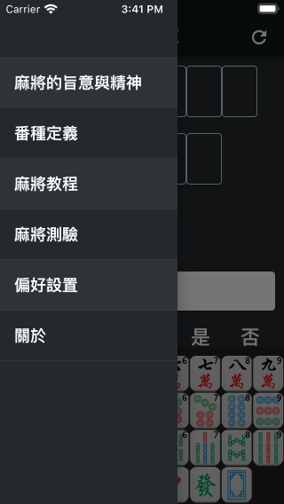

《麻將寶典》是一款根據世界麻將組織2014年修訂版國際《麻將競賽規則》進行編寫的iOS/Android平台App，主要功能包括麻將計算番數、麻將教學、麻將測驗等，後續版本會添加更多功能。
App Store下載鏈接：
App Store
《麻將寶典》提供了簡體中文、繁體中文、英文、日文和法文共5種不同的顯示語言。 默認情況下，App將根據您的操作系統的語言設置，自動選擇最佳顯示語言。 當您希望切換到其他語言時，可以點擊首頁左上角的“≡”按鈕，點擊“偏好設置”，點擊“更改語言”，然後在彈出的語言列表中進行選擇，如下圖。
要輸入麻將，請首先點擊界面上方的輸入位置，此時被點擊的位置下方會出現輸入提示三角，同時鍵盤會自動彈出。 您可以通過鍵盤輸入麻將，如下圖。
對於暗槓、明槓、碰牌和吃牌的情況，請先輸入第一張牌，然後點擊鍵盤上方功能區中對應的功能按鈕即可。 例如，如果想輸入暗槓3索，首先在界面上方點擊輸入位置，然後在鍵盤中點擊“3索”，最後點擊鍵盤上方的“暗槓”按鈕即可。 再例如，要輸入吃牌345萬，首先在界面上方點擊輸入位置，然後在鍵盤中點擊“3萬”，最後點擊鍵盤上方的“明順”按鈕即可，程序會自動補齊4萬和5萬。如下圖所示。
需要注意的是，有些功能鍵在特殊情況下不可用，例如字牌（東南西北中發白）是無法吃牌的，所以此時不顯示明順、暗順按鈕。
當輸入完成後點擊“算番”按鈕，App會開始計算番數並顯示計算結果。如果輸入有誤，App會提示錯誤信息。
在“算番”按鈕下方可以設置其他信息，如自摸、絕張、圈風和門風等。
點擊頁面左上角功能鍵將打開抽屜頁，點擊“番種定義”可以查看全部番種的詳細定義。
點擊抽屜頁中的“意見與建議”可以以郵件形式反饋您的意見和建議，我會第一時間進行解答，感謝您的支持！
App作者：李樸之